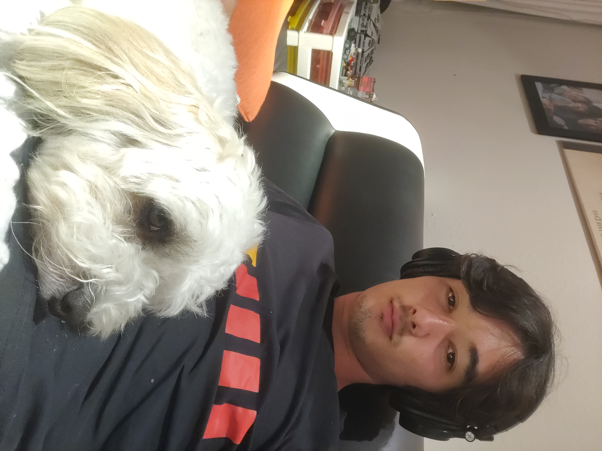

Portfolio of Marcus Williamson

About Me
Hi, I'm Marcus Williamson. I'm a 4th year undergraduate student at UCSC studying Computer Science: Game Design. I like programming and I have experience with C/C++, C# in Unity, Python, JavaScript, Java, and Unreal Blueprints. I also like listening to music and do a little skateboarding, drawing, and photography. That's my dog Yeti.